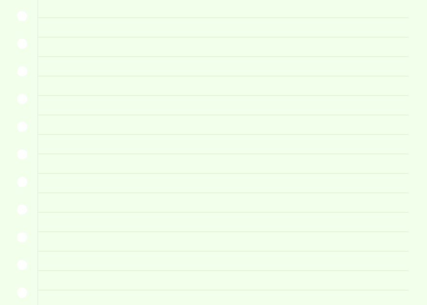

현재 편향은 어떻게 자산 형성을 방해할까요?
-
미래를 위한 저축 방해
노후나 더 큰 미래의 목표를 위해 돈을 모아야 한다는 것을 머리로는 알지만, 지금 당장 즐길 수 있는 소비에 돈을 쓰게 만듭니다.
-
충동적인 투자 유도
투자에서도 마찬가지입니다. 10년 후 크게 성장할 수 있는 건실하고 우량한 자산보다는, 오늘 당장 급등할 것 같은 위험한 자산(테마주, 급등 코인 등)에 마음이 끌리기 쉽습니다. 단기간에 큰 수익을 얻고 싶은 욕심에 냉철한 판단력을 잃고 뇌동매매를 하다가 오히려 큰 손해를 볼 수도 있습니다.
자산 형성을 위한 '미래의 나'와의 약속장기적으로 건강하게 자산을 키워나가려면 우리는 이러한 '현재 편향'을 인정하고 이를 극복할 수 있는 현명한 시스템을 만들어야 합니다.